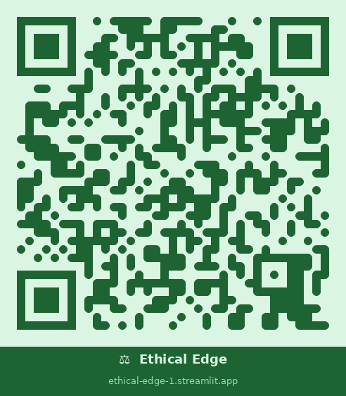

ESG stands for Environmental, Social and Governance — three non-financial dimensions used to evaluate how responsibly a company operates. Investors use ESG scores to build portfolios that align financial returns with broader societal values.
Profit maximisation while avoiding "sin stocks" — companies with very negative impacts. Hard exclusion screening applied before any optimisation.
Stakeholder value — optimise total value T = Financial + Social + Environmental. ESG factors are integrated into the utility function alongside returns and risk.
Common good — sustainability and environmental impact are prioritised above financial returns. Long-term horizon, subject to financial feasibility.
Following the Sustainable Finance 1.0 framework (Schoenmaker, 2017), Ethical Edge applies hard exclusion screening before optimisation. Assets flagged in these sectors are removed entirely from the investable universe.
Companies producing or distributing tobacco products
Defence contractors, arms manufacturers, cluster bombs
Coal, oil and gas extraction; increasingly on exclusion lists due to climate risk
Casinos, betting companies, gaming platforms with social harm concerns
Ethical Edge extends classical mean-variance portfolio theory with an ESG preference term, following the framework from ECN316 Lecture 6.
A good portfolio maximises risk-adjusted return for a given investor. The Sharpe ratio (excess return per unit of risk) captures this — a ratio above 1.0 is considered excellent, above 0.5 is good. For ESG investors, a good portfolio also achieves a meaningful ESG score without sacrificing too much Sharpe ratio.
The frontier shows all possible two-asset portfolios in risk-return space. Coloured by ESG score, it reveals the sustainability-performance trade-off. The tangency portfolio maximises the Sharpe ratio. The ESG-optimal portfolio maximises U including λs̄ — it may sit to the right of tangency if ESG preference is strong.
With correlation ρ < 1, combining two assets reduces portfolio risk below the weighted average of individual risks. The minimum variance portfolio achieves the lowest possible σ. Lower ρ → greater diversification benefit. This is the core insight of Markowitz (1952).
The CML connects the risk-free asset to the tangency portfolio and represents the best possible risk-return combinations available to investors. All portfolios above the efficient frontier but on the CML involve leveraging the tangency portfolio.
Ethical Edge is built with Streamlit and deployed publicly on Streamlit Cloud. The interface guides users through a structured 5-step input process, then presents results across four tabs.
6 metric cards (weights, E[R], σ, ESG, Sharpe), plain-English summary sentence, ESG cost progress bar, full comparison table, λ-sensitivity table
Mean-variance scatter coloured by ESG score, CML, two indifference curves, 5 key portfolios marked, ESG–Sharpe frontier with ESG cost annotated, E/S/G pillar bar chart
Investor type classifier (Risk-Seeking / Balanced / Risk-Averse), ESG profile (Light Green / Green / Deep Green), allocation explanation, diversification analysis
LaTeX utility function, parameter table, stoggle explanations, academic references with clickable links (Flammer 2021, Bolton & Kacperczyk 2021, Schoenmaker 2017, Berg et al. 2022)
5 pre-built profiles (Young Professional, Impact Investor, Retiree etc.) auto-fill γ and λ — ideal for retail investors unfamiliar with these parameters.
Users type real company names (e.g. Apple, Shell) which flow through all tables, charts, and the plain-English summary for a realistic recommendation.
Shows how optimal weights, return, risk and ESG score change as λ goes from 0 to 4 — directly illustrating the sustainability-performance trade-off.
"Based on your profile, we recommend X% in Apple and Y% in Shell. Expected return Z%, ESG score W (moderate), Sharpe ratio 0.51 (good)."
Every Sharpe ratio is classified as Excellent (≥1.0) / Good (≥0.5) / Fair (≥0.25) / Poor — making financial quality immediately legible.
Separate E, S and G inputs with user-defined pillar weights, normalised to a single composite score. Allows focus on e.g. climate over governance.
A worked example demonstrating Ethical Edge with a real investor profile.
Medium-term horizon (2–5 years) · Cares about sustainability · Seeks solid risk-adjusted returns
Asset Inputs
| Apple (AAPL) | Greencoat (GRP) | |
|---|---|---|
| E[R] | 13% | 7% |
| σ | 18% | 22% |
| E score | 40 | 80 |
| S score | 35 | 70 |
| G score | 30 | 75 |
| ESG (composite) | 35.5 | 75.5 |
Market Inputs
| Parameter | Value |
|---|---|
| Correlation ρ | 0.30 |
| Risk-Free Rate rf | 2.5% |
| Risk Aversion γ | 3.0 |
| ESG Preference λ | 1.5 |
| E/S/G weights | 40% / 30% / 30% |
Portfolio Comparison
| Portfolio | AAPL | GRP | Sharpe |
|---|---|---|---|
| MV Optimal (λ=0) | 87% | 13% | 0.514 |
| ✅ ESG Optimal | 52% | 48% | 0.487 |
| Tangency | 87% | 13% | 0.514 |
| Min Variance | 65% | 35% | — |
ECN316 Group Project · Queen Mary University of London · April 2026

Scan the QR code or visit the link below to try the app on any device. Build your own sustainable portfolio in under 2 minutes.
ethical-edge-1.streamlit.app